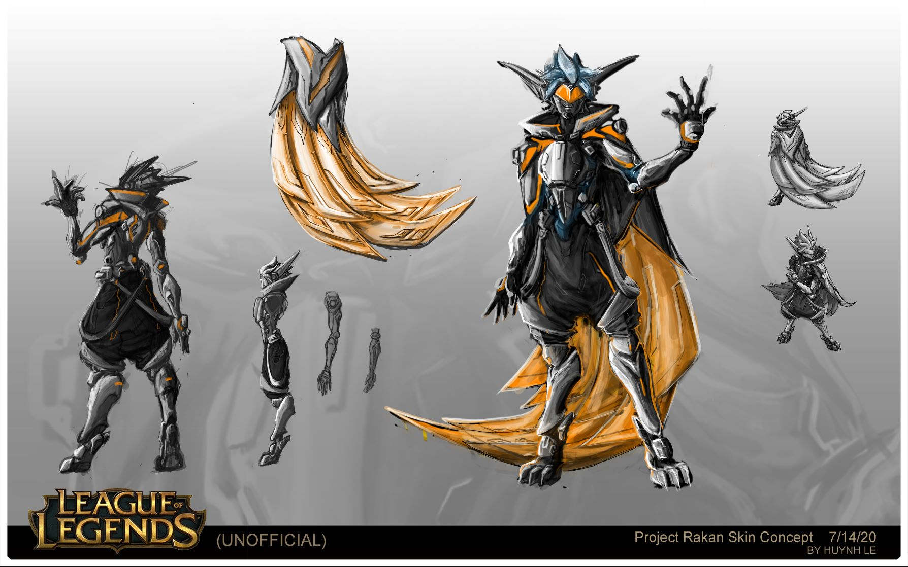
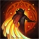

About Project Rakan
After centuries, Rakan was revived under the PROJECT procedure. Although being in a new World, he still has a set goal in mind, is to look for his lover Xayah.
Rakan in his concept art
Rakan's Abilities
-  Innate: Rakan periodically generates a 33 − 254 (based on level) (+ 90% AP) Hybrid resistances icon shield that lasts until broken.
- Active: Rakan slings an enchanted feather forward, dealing Magic damage magic damage to the first enemy hit.
- Active: Rakan Dash dashes to the target location.
- Active: Rakan Hybrid resistances icon shields the target allied champion for 3 seconds and then
- Active: Rakan breaks into a captivating sprint for 4 seconds, gaining Movement speed icon 50% bonus movement speed and becoming Ghost ghosted for the duration
Builds
Check out some of the items build for Rakan: